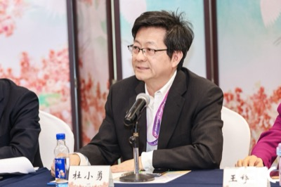

Xiaoyong Du
教授 / 博士生导师
数据库系统 · 知识工程 · 智能信息检索；教育部重点实验室牵头人；2018 国家科技进步奖二等奖主要完成人；《数据库系统概论》后续版本主编之一。

Wei Lu
吴玉章特聘教授 / 博导；信息学院副院长；DEKE 副主任
数据库系统内核 · 分布式事务 · 查询优化 · 时序图数据库；在 SIGMOD/VLDB/TKDE 发表 50+ 论文；CCF 数据库专委会执行委员；全国大学生计算机系统能力大赛数据库赛道技术负责人。

Tong Li
教授；数据科学与技术系副主任；信息技术中心副主任
Computer Networks · Distributed Big Data Systems · AI；国家级青年人才，中国人民大学杰出学者。
Feng Zhang
中国人民大学杰出学者系列人才岗位教授 / 博士生导师
大数据系统 · 高性能计算 · 机器学习系统；担任 2019 级图灵班班主任。
Shuang Liu
副教授
复杂系统测试 · AI for SE · SE for AI；获 ESEC/FSE 2020 最佳论文奖。

Yahui Sun
副教授
其目前的研究兴趣是面向大模型检索增强生成（RAG）、智能体（agent）的新数据管理算法与系统。

Xinyi Zhang
副教授；吴玉章青年英才
研究方向为智能数据库技术（AI4DB）、数据库系统、面向LLM的数据管理。

Jinhao Dong
讲师；中国人民大学吴玉章青年英才；小米大模型 Core 团队技术顾问
代码大模型 · 大模型智能体 · 大模型基础设施 · 通用智能体平台
分布式数据库事务协议与高性能内核
"让事务在几千台机器上也不打架。"
数据库内核分布式事务
LLM Agent 框架与工具调用
LLMAgent
历届毕业生分布于国内外高校、研究机构与一线科技企业——详见团队发展史。